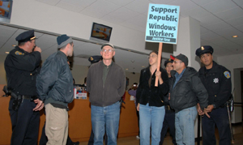
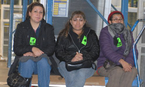

All workers engaged in construction of docks, railroads, highways, streets, bridges, sewers, subways, tunnels, canals, viaducts, irrigation canals and pipelines.
Submitted on Fri, 01/09/2009 - 1:50am
THIS SATURDAY, JAN. 10TH
THE ILLINOIS WORLD LABOR HOUR
90.1 FM /
www.weft.org 11AM - 12 NOON ( CENTRAL TIME )
A LIVE TELEPHONE INTERVIEW WITH ROBERT AUSTIN OF THE CHICAGO INDUSTRIAL WORKERS OF THE WORLD ( IWW ).
TALKING ABOUT HIS EYE-WITNESS EXPERIENCE AS A PARTICIPANT IN THE REPUBLIC WINDOW AND DOOR FACTORY OCCUPATION WITH RANK AND FILE WORKERS OF THE UNITED ELECTRICAL WORKERS UNION ( UE ).
TUNE IN AT 11AM ( CST ) TO HEAR FELLOW WORKER AUSTIN DESCRIBE THE EVENT THAT SHOCKED THE RULING CLASS AND INSPIRED WORKERS AROUND THE WORLD.
WEFT 90.1 FM /
www.weft.org
LISTENER SUPPORTED COMMUNITY RADIO IN CHAMPAIGN IL.
Submitted on Wed, 12/17/2008 - 8:17pm
A dozen members and supporters of the Industrial Workers of the World in
NYC entered two Bank of America locations in Manhattan yesterday to demand that
the bailed-out financial giant do the right thing in the Republic sit-down
strike. Workers served a demand letter on Branch management and disrupted
business as usual with chants of, "you got bailed out, we got sold out." At a
third Bank of America location, management had been tipped off, and the
demonstrators were stopped at the door by senior security personnel. The
security personnel accepted the demand letter, stated "no comment", and then
retreated into the bank as demonstrators erupted in chanting.
The NYC Wobblies pledged full and lasting solidarity with the UE brothers
and sisters as they struggled for fair compensation and for control of their
factory.
Submitted on Thu, 12/11/2008 - 6:23pm
Press Release from UE Local 1110, posted in solidarity by IWW members:
Workers Vote to Get Pay; Occupation Ends!
After 6 days occupying the
plant, workers at Republic Window and Doors in Chicago voted to accept a
settlement late on December 10th.
The settlement totals $1.75million. It
will provide the workers with:
- Eight weeks of pay they are owed under
the federal WARN Act;
- Two months of continued health coverage, and;
-
Pay for all accrued and unused vacation.
JPMorgan Chase will provide
$400,000 of the settlement, with the balance coming from Bank of America.
Although the money will be provided as a loan to Republic Windows and Doors, it
will go directly into a third-party fund whose sole purpose is to pay the
workers what is owed them. In addition, the UE has started the "Window of
Opportunity Fund" dedicated to re-opening the plant.
As the Local 1110
leaders characterized the settlement, "We fought to make them pay what they owe
us, and we won." Read more about the settlement here.
We want to extend
a big THANK YOU to all of you who participated in this campaign. The tremendous
support and solidarity from the thousands of people like you around the country
- and the world - who took the time to send messages to Bank of America and who
rallied at banks across the country was crucial in winning this victory.
This is truly an historic victory for workers in the United States.
But this struggle is just the beginning! As the economic crisis deepens
we need to launch a working class fight back. Rallies for a "People's Bailout"
will continue today and throughout the rest of the week.
Click here to
find an action near you (updated daily)
http://www.jwj.org/bailout/12-08actions.html. You can also take action online:
- Tell Congress: We Demand a People's Bailout:
http://www.unionvoice.org/campaign/peoplesbailout
- Save Autoworker Jobs:
http://www.unionvoice.org/campaign/autoworkers
- VOTE NOW for Grinch of the
Year: http://www.jwj.org/grinch
Thanks again for all that you do! You
can see photos, video, and press clips from the Week of Action here:
http://www.jwj.org/bailout/12-08report.html
Submitted on Thu, 12/11/2008 - 6:18pm

By Richard Becker - Tuesday, December 9, 2008, Originally posted at Party for Liberation and Socialism.
A sit-in and protest was held in San Francisco on Dec. 9 as an act of
solidarity with workers who have been sitting-in since Dec. 5 at the
Republic Windows and Doors factory in Chicago . Four people were
arrested after sitting in at a downtown office of the Bank of America
during the protest in San Francisco.
Bank of America, which has received tens of billions in taxpayers
money from the bank bailout, triggered the plant closing by cutting off
credit to the company to pay workers their wages and ongoing expenses.
The shutdown of the plant without notice is a violation of federal law.
The workers, members of the United Electrical Workers union, have
refused to leave the factory until they are paid in full for wages,
unused vacation time and other compensation due to them. They are also
demanding that Bank of America extend credit so that the plant can
remain open and they can keep their jobs.
Submitted on Tue, 12/09/2008 - 3:39pm
From Chicago Indymedia
The worker occupation of the Republic Windows and Doors factory on Chicago's Goose Island by members of UE
(United Electrical, Radio and Machine Workers of America) Local 1110
went into its third day on Sunday, and workers have vowed to continue
the occupation until they are paid back pay and benefits, or until the
plant is re-opened.
The occupation was declared on
Friday, the day the company moved to shutter the plant with only three
days notice — in violation of federal and state labor laws. Owners have
also cut off employees' insurance and failed to pay back pay. The
takeover has sparked a groundswell of support across the nation, with
rallies, e-mail campaigns, petition drives, fundraisers and plans for future actions. [ Updated news links ]
Company management blames the shut-down on Bank of America, which cut
their credit line — after BoA received $25 billion in federal bailout
money that the bank said they did not need. Since the bailout began,
BoA — like big banks across the globe — has slashed credit lines to
businesses, forcing a growing number of small and medium-sized
companies to shut down. Workers plan to meet with company and bank
representatives on Monday — and to picket BoA's LaSalle St. offices on
Tuesday if Republic's line of credit is not restored.
The action at Republic Windows comes on the heels of a drive to kick
out the company union, which had colluded with company owners and
management for years. That effort succeeded after three years of
struggle. Republic Windows' worker occupation is one of the first
actions of its kind in the United States since the Great Depression,
when a wave of sit-in strikes and factory occupations marked one of the
most militant phases in U.S. labor history.